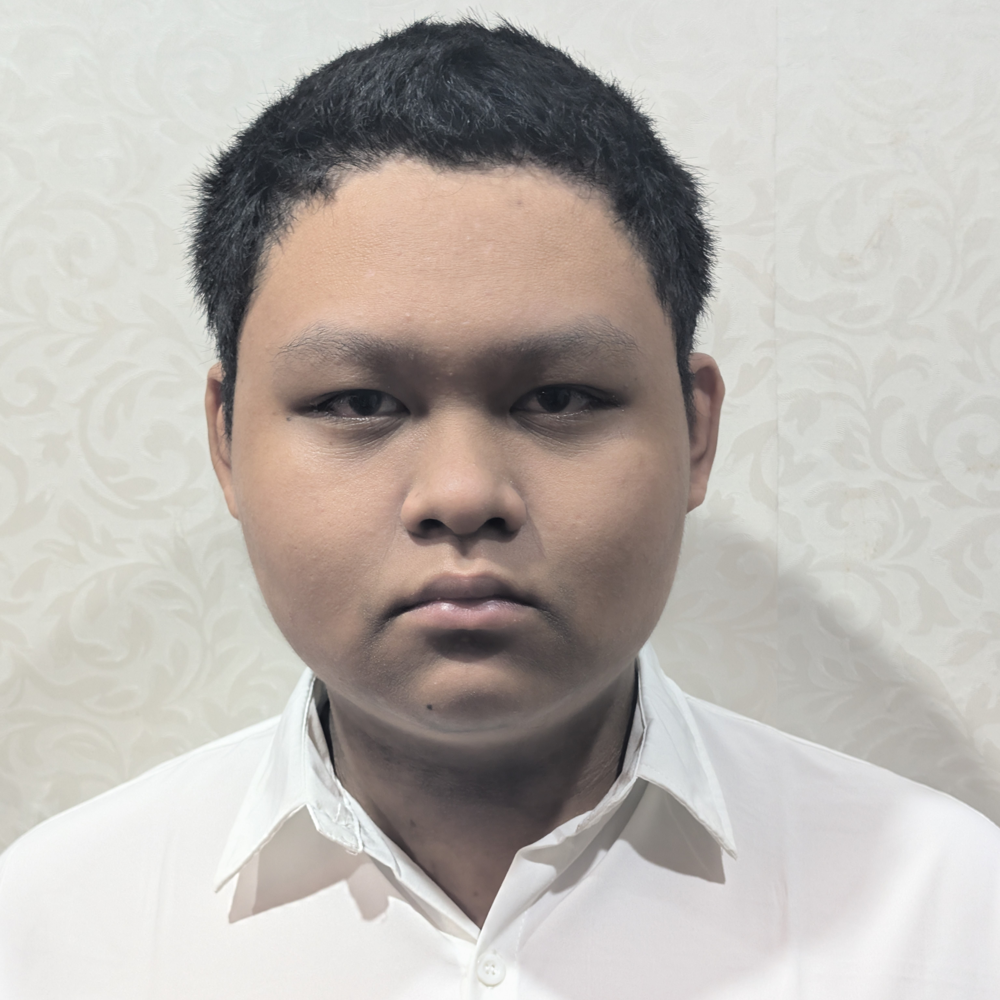

About me
Hello everybody, welcome to my page, I am Quang and based in Vietnam.
Currently I am studying at class 12C1 in Alfred Nobel School.
My interests:
- Studying foreign languages
- Japanese (studying for N3, at the moment)
- Playing the guitar in my free time
- I play various of online arrangements of songs
- Learning programming languages
- Java, Python, C++,
- Web design
My achievements
- Completed internship program at Sapo VN on Java course
- Completed volunteer programmes at National Institute of Hematology and Blood Transfusion
- Established a non-profit organisation with my friends to:
- Teach english to children living in remote areas
- Charitable contributions to support individuals suffered from natural disasters
My goals I intend to achieve in the future
- Study Japanese to a proficient level that I can use business Japnaese
- Develop strong proficiency in Java and Python so I can build some advanced projects
- Explore game development by making a game based on cities that I like
Thank you for reading my about me page!
.jpg#/media/File:The_Hive,_NTU_(I).jpg){kind=link}